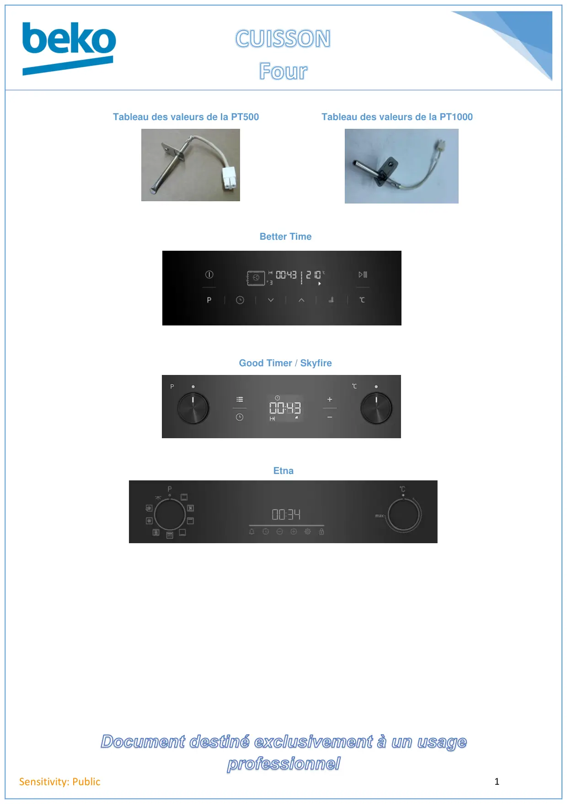

CUISSON Four page accueil

Document destiné exclusivement à un usageprofessionnel1Sensitivity: PublicBetter TimeTableau des valeurs de la PT500Good Timer / SkyfireEtnaTableau des valeurs de la PT1000
1 / 1


Gros électroménager
Ressources techniques SAV — Beko · Grundig · Whirlpool · Hotpoint · Indesit.
